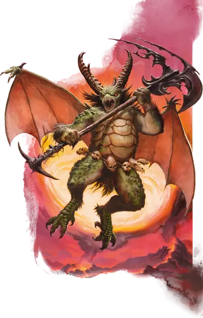

Никалот
Nycaloth
Большое Исчадие (Юголот), Нейтральное Злое

Класс Защиты 18 Инициатива +4 (14)
Хиты 152 (16к10 + 64)
Скорость 40 футов, Полёта 60 футов
| мод | спас | ||
|---|---|---|---|
| СИЛ | 20 | +5 | +5 |
| ЛОВ | 11 | +0 | +0 |
| ТЕЛ | 19 | +4 | +4 |
| мод | спас | ||
|---|---|---|---|
| ИНТ | 12 | +1 | +1 |
| МДР | 10 | +0 | +0 |
| ХАР | 15 | +2 | +2 |
Сопротивление урону Огонь, Холод, Электричество
Иммунитеты Кислота, Яд; Отравленный
Чувства пассивное Восприятие 14, Слепое зрение 60 футов
Языки Бездны, Инфернальный, Телепатия 60 фт.
Опасность 9 (5 000 опыта; БВ +4)
Особенности
Восстановление исчадия. Когда никалот умирает за пределами Геенны, его тело растворяется в ихоре и в тот же миг заново возрождается со всеми Хитами где-то в Геенне.
Сопротивление магии. Никалот совершает с Преимуществом спасброски от заклинаний и прочих магических эффектов.
Действия
Мультиатака. Никалот совершает две атаки Ртутным топором.
Ртутный топор. Бросок рукопашной или дальнобойной атаки: +9, досягаемость 10 фт. или дистанция 30/90 фт. Попадание: 18 (2к12 + 5) Рубящего урона плюс 10 (3к6) Силового урона. Промах или попадание: Топор магическим образом возвращается в руку никалота сразу после совершения дальнобойной атаки.
Бонусные действия
Сумрачный телепорт. Никалот получает Невидимость на 1 минуту и телепортируется на расстояние до 30 футов в видимое им незанятое пространство. Состояние прекращается преждевременно сразу после получения им урона.
Бонус мастерства +4
Среда обитания Геенна
Сокровища Оружейные
Никалот
Юголот стратегии и борьбы
Никалоты — разжигатели войны, которые наслаждаются битвами и завоеваниями. Эти огромные крылатые юголоты телепортируются по полю битвы и взмывают в воздух, чтобы сбить с толку своих противников и атаковать их своим любимым оружием — ртутными топорами из Геенны.
Никалоты командуют отрядами меззолотов и служат наёмниками у арканалотов, ультролотов, исчадий-военачальников или нечестивых смертных. Они готовы повиноваться более сильным или хитрым существам, если те утолят их жажду крови. Эти исчадия готовы продолжать служить умелым предводителям даже после завершения контракта, надеясь добиться величайших побед. Однако наниматели, терпящие поражение за поражением, должны опасаться возмездия со стороны этих гордых юголотов.
Никалоты и другие юголоты часто служат наёмниками в межпланарных конфликтах, которые порой задевают и Материальный план. Совершите бросок по таблице «Вторжение юголотов» для вдохновения или выберите сами план отряда юголотов.
Вторжение юголотов
| 1к4 | Юголоты-наёмники стремятся... |
| 1 | Захватить стратегически важный портал. |
| 2 | Обзавестись чудовищами или боевыми зверями в качестве союзников. |
| 3 | Уничтожить город, где скрываются враждебные культисты. |
| 4 | Освободить из заключения дружественное Исчадие. |